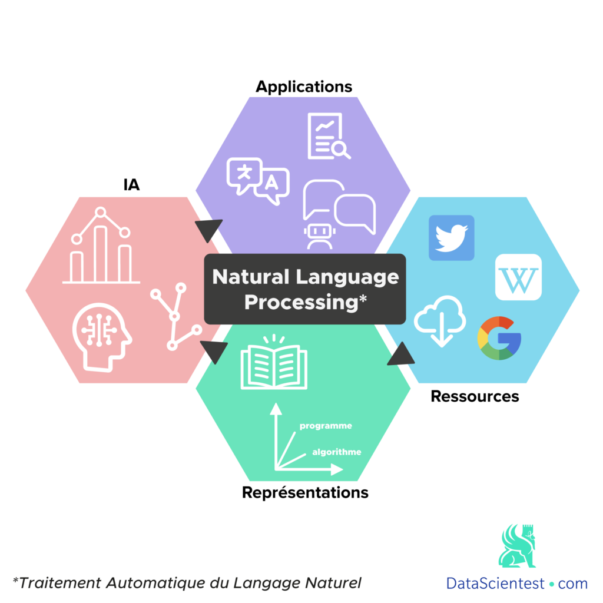
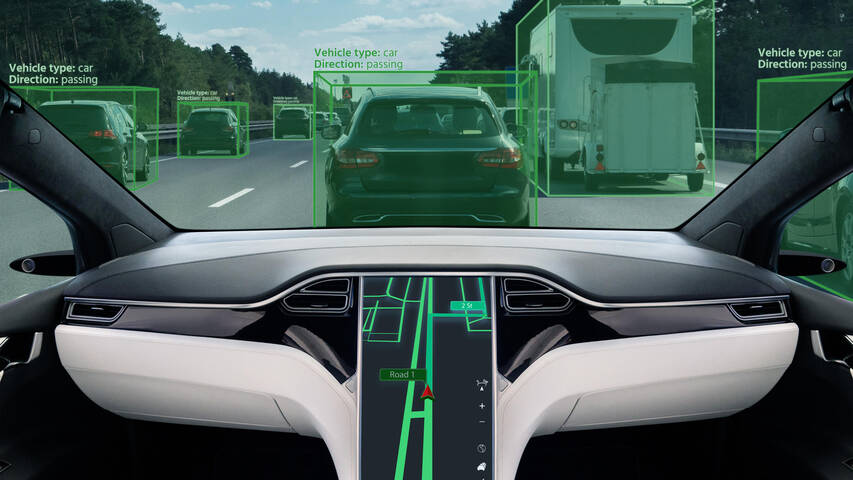
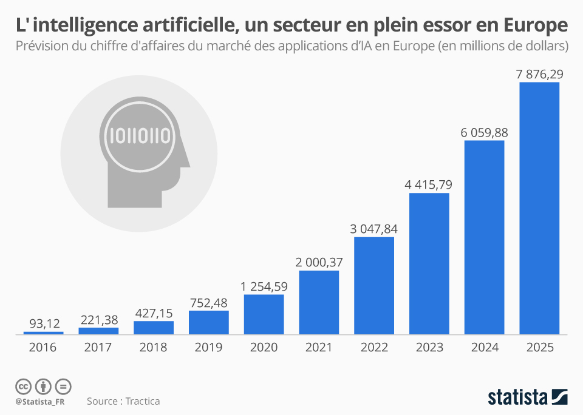

L'intelligence artificielle : une révolution en marche
L'intelligence artificielle (IA) est une discipline de l'informatique qui vise à créer des machines capables d'imiter le comportement humain. Depuis ses débuts, l'IA a connu un développement fulgurant, ouvrant la voie à de nombreuses applications dans divers domaines tels que la santé, la finance, l'automobile, etc.
Les progrès récents dans le domaine de l'IA, tels que le deep learning et le traitement du langage naturel, ont permis d'atteindre des niveaux de performance jamais vus auparavant.

L'IA est déjà largement utilisée dans de nombreux domaines. Par exemple, dans le domaine de la santé, l'IA est utilisée pour aider les médecins à diagnostiquer les maladies et à recommander des traitements. Dans le domaine de la finance, les algorithmes d'IA sont utilisés pour analyser les données financières et prévoir les tendances du marché. Dans le domaine de l'automobile, l'IA est utilisée pour développer des voitures autonomes capables de conduire sans intervention humaine.

Malgré ses nombreux avantages, l'IA soulève également des préoccupations éthiques et sociales. Par exemple, il existe des préoccupations concernant l'impact de l'IA sur l'emploi, la vie privée et la sécurité. De plus, il est important de veiller à ce que l'IA soit utilisée de manière responsable et éthique, afin de minimiser les risques et de maximiser les avantages pour la société dans son ensemble.
Applications de l'intelligence artificielle
Les applications de l'intelligence artificielle sont vastes et en expansion constante. Voici quelques exemples d'applications courantes :
- Systèmes de recommandation utilisés par les plateformes de streaming vidéo et de musique pour recommander du contenu aux utilisateurs.
- Agents conversationnels (chatbots) utilisés par les entreprises pour fournir un support client automatisé.
- Véhicules autonomes utilisés dans le domaine des transports pour conduire sans intervention humaine.
De plus, l'IA est également utilisée dans des domaines plus spécialisés tels que la médecine, la finance, la robotique et bien d'autres.
Impact de l'intelligence artificielle sur la société
L'intelligence artificielle a un impact significatif sur la société, tant sur le plan positif que négatif. Voici quelques-uns des principaux impacts :
- Emploi : L'automatisation rendue possible par l'IA peut entraîner des pertes d'emplois dans certains secteurs, mais elle peut également créer de nouveaux emplois dans d'autres domaines.
- Éthique : L'utilisation de l'IA soulève des questions éthiques importantes, notamment en ce qui concerne la vie privée, la surveillance et la prise de décision automatisée.
- Économie : L'IA a le potentiel de stimuler la croissance économique grâce à des gains d'efficacité et à de nouvelles opportunités commerciales.
Il est essentiel de comprendre et de gérer ces impacts afin de maximiser les avantages de l'IA tout en atténuant ses effets négatifs.
Graphique : Utilisation de l'intelligence artificielle dans différents secteurs

Ce graphique montre comment l'intelligence artificielle est utilisée dans différents secteurs tels que la santé, la finance, l'automobile, la robotique, etc. Il met en évidence l'importance croissante de l'IA dans notre société.